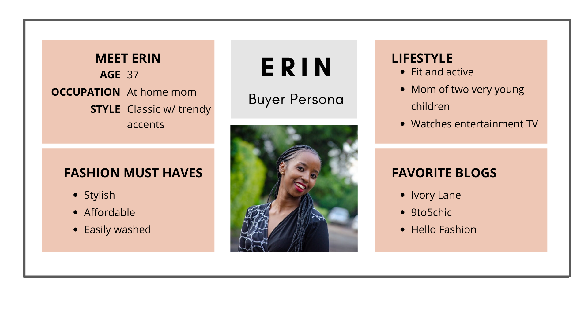

OVERVIEW
I truly enjoyed building this online storefront with my teammate Claire Helland in the Moms Can Code School program (https://www.momscan.co/). This was an interesting assignment that incorporated marketing and design concepts into the development of an MVP for a fictional client.
CLIENT DESCRIPTION AND COMPETITORS
In a fictional interview*, our client described the business:

* This interview excerpt was provided to us as part of the assignment.
Buyer Persona
The typical customer is described in the buyer persona.
Competitors
Competitors include Vici Collection, Roolee, Shop Stevie, Ascot and Hart, and Jean Jail.
DESIGN TO DELIGHT
Customer Journey
In addition, we documented the customer journey, which informed our design choices.

Site Mockup

At this point, it was time to build the webpage. Claire and I did a lot of pair programming (and Googling!), and we learned so much! We were so pleased with the results, but we had not yet learned about making websites accessible.
ACCESSIBILITY
After building the landing page for the online store, we ran a free, automated accessibility test through the Bureau of Internet Accessibility. Below are some graphics from the test results that summarize how our site fared.


The automated report also showed which WCAG 2.1 A/AA guidelines may have been violated, but it did not provide any more specific guidance on what aspect of the guideline was violated or how to fix the issues. Therefore, I researched each potentially violated guideline to determine what issues existed and wrote a report about my findings.
REFLECTIONS
What I Learned
- The importance and usefulness of customer and competitor research to the design process was new to me.
- I saw how graphic organizers for a buyer persona, business model canvas and customer journey are can assist in structuring and making sense of information learned about the client and the client's customers.
- Creating a mood board showing images, colors, typography, and other features to include before the design process starts makes the rest of the design process go faster.
- Coding is easier when the design is fully fleshed out in design software first.
- Pair programming is a great way to see how someone else approaches a problem.
- When two or more people collaborate on coding, they often bring different skill sets and coding styles from each other. The next time I collaborate with someone, I'd like us to first establish a coding style guide to try to keep the code looking more consistent throughout.
- I knew more CSS than I thought I did!
Future Improvements
Since building this project, I have continued to expand my skills. With my current knowledge, I would like to improve this project in the following ways:
- Incorporate CSS variables.
- Clean up the CSS code to be more DRY and make the approach more consistent (as if there had been a style guide in use).
- Add a second page - a product page - to the site.
THE TEAM


Together